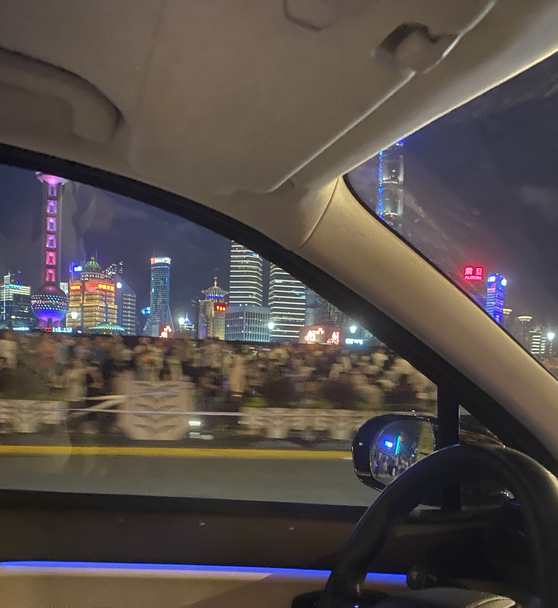

Experiences
I was born in Wenzhou, China, and later raised in Shanghai, where I spent most of my childhood. Growing up in these two vibrant cities, I developed a deep appreciation for both traditional and modern cultures, which has shaped my worldview in unique ways. My experiences in Shanghai, a city known for its rapid urbanization and cultural blend, inspired my interest in urban development and the ways technology can enhance people’s lives.
